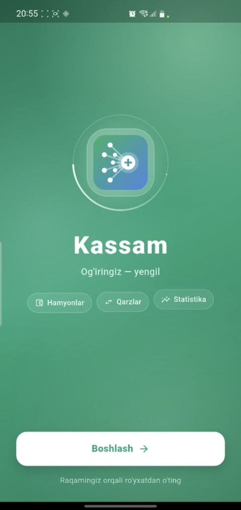
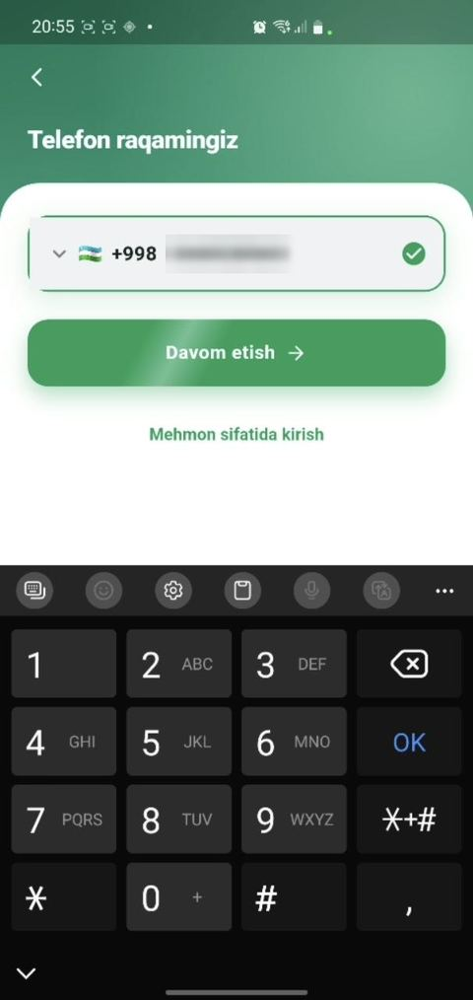
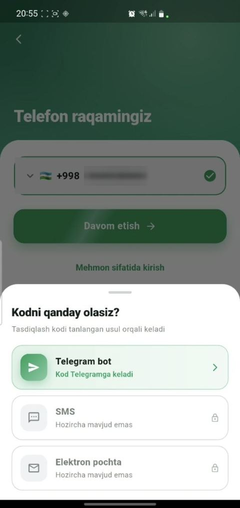
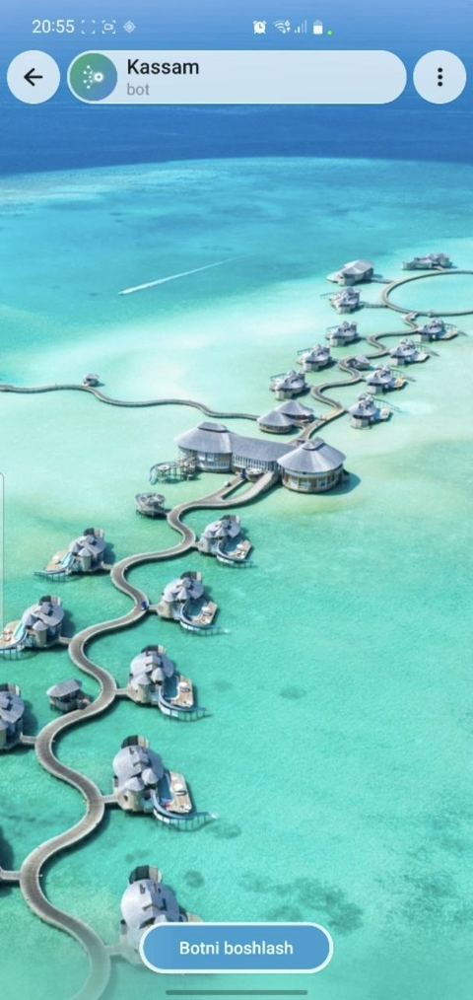
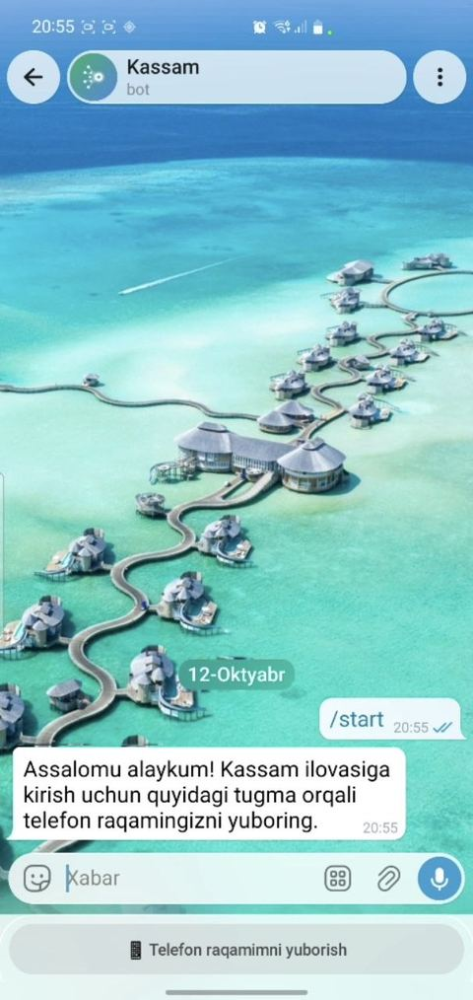
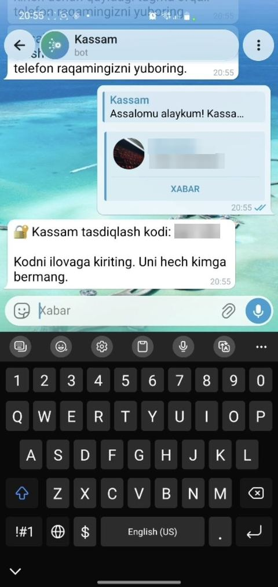
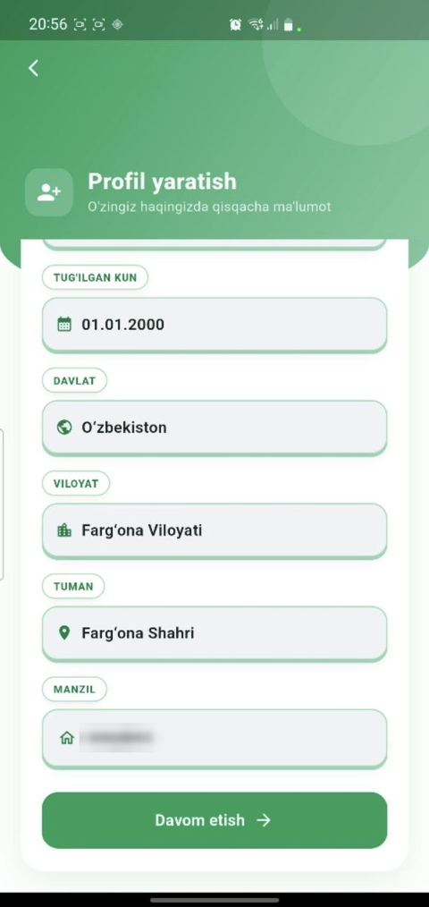
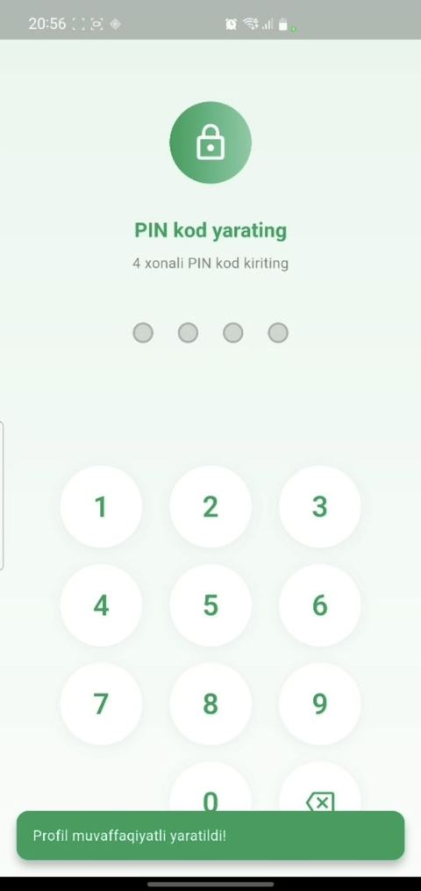
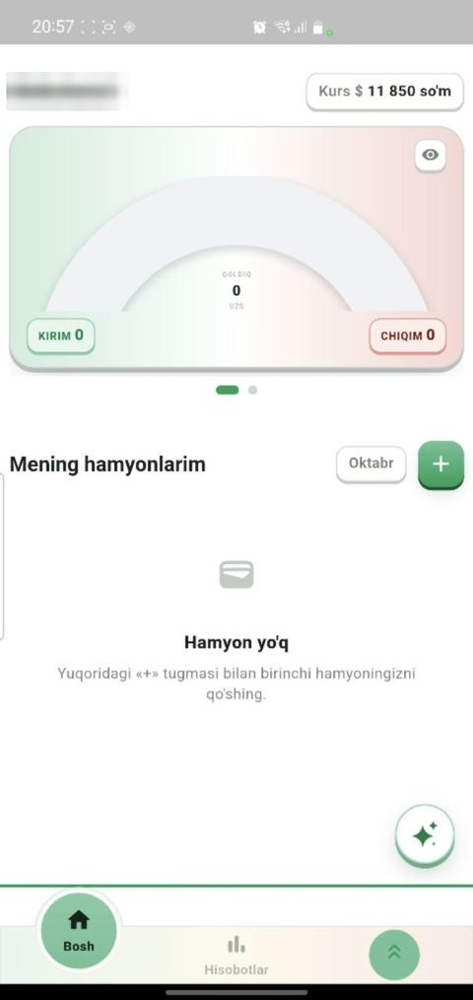

Ro‘yxatdan o‘tish uchun telefon raqamingiz va Telegram kerak bo‘ladi. Videoni ko‘ring yoki pastdagi qadamlarni ketma-ket bajaring.
DiqqatKassam’ga kiritgan raqamingiz Telegram akkauntingiz raqami bilan bir xil bo‘lishi shart. Aks holda kod kelmaydi.
- Kassam’ni oching va Boshlash ni bosing.

- Telefon raqamingizni yozing — +998 o‘zi turadi, qolgan 9 raqamni kiritasiz. Yashil belgi chiqsa, Davom etish ni bosing.
Belgi chiqmasa, raqamda bitta raqam kam yoki ortiq.

- «Kodni qanday olasiz?» oynasida Telegram bot ni tanlang. Telegram o‘zi ochiladi.
SMS va elektron pochta hozircha ishlamaydi.

- Kassam botida Botni boshlash ni bosing.
Bu tugma bo‘lmasa, xabar joyiga /start deb yozib yuboring.

- Pastdagi Telefon raqamimni yuborish ni bosing. Telegram ruxsat so‘rasa — tasdiqlang.

- Bot 6 xonali kod yuboradi. Kassam’ga qayting va shu kodni kiriting.
Kodni hech kimga bermang — Kassam xodimlari ham uni so‘ramaydi.

- Profilingizni to‘ldiring: ism, familiya, tug‘ilgan kun, so‘ng davlat → viloyat → tuman va manzil. Davom etish ni bosing.

- 4 xonali PIN kod o‘ylab toping, kiriting va yana bir marta kiritib tasdiqlang.
1234, 0000 yoki tug‘ilgan yil kabi oson koddan qoching.

- Tayyor — bu Kassam’ning bosh sahifasi. Endi birinchi hamyoningizni + tugmasi bilan qo‘shing.



TayyorEndi Kassam har ochilganda PIN kodni so‘raydi. Keyingi qadam: hamyon ochish.
Telefon yo‘qolsa yoki yangi telefon olsangiz
Ma’lumotlaringiz telefonda emas, raqamingizga bog‘langan profilda saqlanadi. Eski raqam bilan kirsangiz, hammasi qaytadi.
- Raqam yo‘qolgan bo‘lsa — operator ofisida pasport bilan shu raqamga yangi SIM-karta oling.
- Yangi telefonda Telegram’ga o‘sha raqam bilan kiring.
- Kassam’ni o‘rnating va yuqoridagi 1–6-qadamlarni eski raqamingiz bilan bajaring.
- Profil yaratish oynasi chiqmaydi — eski hamyonlar, qarzlar va hisobotlar o‘zi ochiladi. PIN so‘rasa, yangi PIN o‘ylab toping.
DiqqatBoshqa raqam yozsangiz, Kassam sizni yangi odam deb biladi va bo‘sh profil ochiladi.